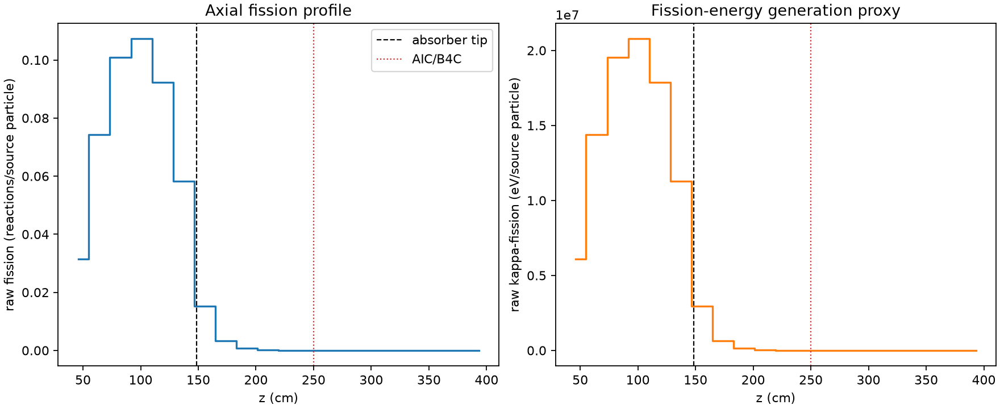
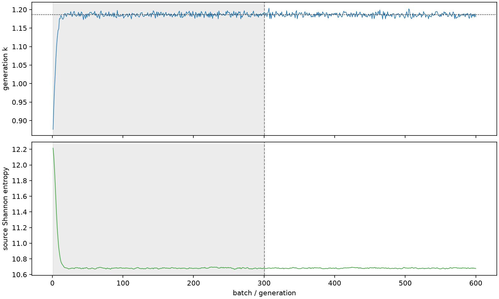

| field | value |
|---|---|
| experiment | V2-STAGE_128_OGRENCI_01-0001 |
| k | 1.1861334324749295 |
| MC standard error | 0.0001955107570971129 |
| seconds | 1091.127810498001 |
| acceptance | not_assessed |
| convergence | review_required |
Completed is output integrity only; physical and statistical review required. Zero tallies do not prove zero production or zero uncertainty.
| diagnostic | value |
|---|---|
| geometric fuel voxels | 5280 |
| zero fission tally voxels | 1617 |
| low signal fuel voxels | 2551 |
| low signal fission share | 8.939387971214065e-05 |
| low signal kappa share | 8.943436614501697e-05 |
| important fission share | 0.9501181859722551 |
| previous filter included | 2729 |
| duration estimate s | 1562.5173488400023 |
| actual minus estimate s | -471.3895383420013 |
| fission relative MC error | statistics |
|---|---|
| all_geometric_fuel | {"voxels": 5280, "positive_mean_voxels": 3663, "zero_mean_voxels": 1617, "undefined_relative_error_voxels": 1617, "median": 0.0135879352986327, "p95": 0.9272319630564634, "maximum": 1.0000000000000002} |
| low_signal | {"voxels": 2551, "positive_mean_voxels": 934, "zero_mean_voxels": 1617, "undefined_relative_error_voxels": 1617, "median": 0.5480296014197829, "p95": 1.0, "maximum": 1.0000000000000002} |
| important_95pct | {"voxels": 1545, "positive_mean_voxels": 1545, "zero_mean_voxels": 0, "undefined_relative_error_voxels": 0, "median": 0.005705395083067688, "p95": 0.009303560367586205, "maximum": 0.010739126690573489} |
| outside_previous_filter | {"voxels": 2551, "positive_mean_voxels": 934, "zero_mean_voxels": 1617, "undefined_relative_error_voxels": 1617, "median": 0.5480296014197829, "p95": 1.0, "maximum": 1.0000000000000002} |
| kappa_fission relative MC error | statistics |
|---|---|
| all_geometric_fuel | {"voxels": 5280, "positive_mean_voxels": 3663, "zero_mean_voxels": 1617, "undefined_relative_error_voxels": 1617, "median": 0.01356797382718161, "p95": 0.9264426168988794, "maximum": 1.0000000000000002} |
| low_signal | {"voxels": 2551, "positive_mean_voxels": 934, "zero_mean_voxels": 1617, "undefined_relative_error_voxels": 1617, "median": 0.5476072711757911, "p95": 1.0, "maximum": 1.0000000000000002} |
| important_95pct | {"voxels": 1545, "positive_mean_voxels": 1545, "zero_mean_voxels": 0, "undefined_relative_error_voxels": 0, "median": 0.005699313443637688, "p95": 0.00929280151087604, "maximum": 0.010726974563446453} |
| outside_previous_filter | {"voxels": 2551, "positive_mean_voxels": 934, "zero_mean_voxels": 1617, "undefined_relative_error_voxels": 1617, "median": 0.5476072711757911, "p95": 1.0, "maximum": 1.0000000000000002} |
| axial bin | fission share | kappa-fission share |
|---|---|---|
| 1 | 0.06487258762029662 | 0.06487459406550111 |
| 2 | 0.15339629769172608 | 0.15339378525912936 |
| 3 | 0.20855324675360298 | 0.20854990707423376 |
| 4 | 0.22155787568107785 | 0.22155430066599038 |
| 5 | 0.1904925268710756 | 0.19048958490770712 |
| 6 | 0.12036964474552998 | 0.12036802398197664 |
| 7 | 0.031578489664368346 | 0.03158690188581008 |
| 8 | 0.00696649117510379 | 0.006969170886103391 |
| 9 | 0.0016783912467042777 | 0.0016790486112276972 |
| 10 | 0.00041380156454277276 | 0.0004139784437647038 |
| 11 | 9.39879507454318e-05 | 9.403357890848887e-05 |
| 12 | 2.1052829293245705e-05 | 2.1062290450832662e-05 |
| 13 | 4.903315780926519e-06 | 4.904461362022003e-06 |
| 14 | 6.526308781171333e-07 | 6.534230190144624e-07 |
| 15 | 3.4565589031362696e-08 | 3.4593228789281014e-08 |
| 16 | 1.561097934387863e-08 | 1.5788822663512744e-08 |
| 17 | 8.270556584265779e-11 | 8.276390017981757e-11 |
| 18 | 0.0 | 0.0 |
| 19 | 0.0 | 0.0 |
| 20 | 0.0 | 0.0 |
Histories include the inactive-to-active transition at batch 300. kappa-fission approximates fission energy production, not total heat deposition.

